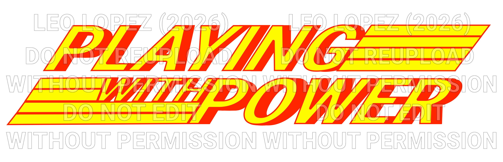
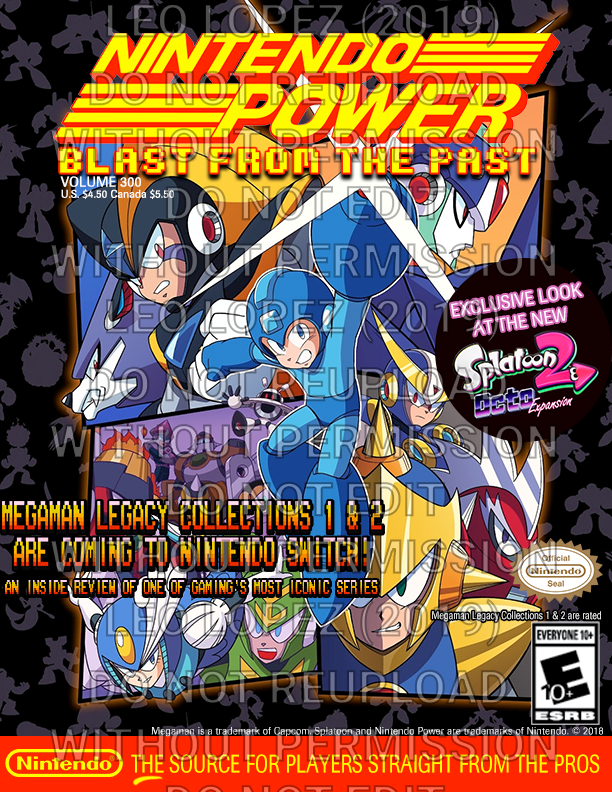
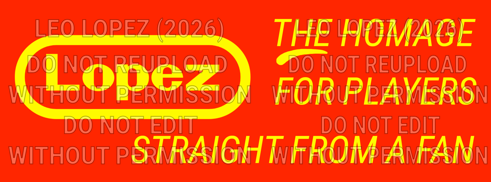

Homage Logo

This is a logo made specifically for this website as a homage to the classic era logo of Nintendo Power.
Since it was such a quick mockup, there's quite a few mistakes and things that could use some work:
- The stroke outlines for the text and the lines need to be adjusted, including adjusting the bold backdrop effect for the text
- The text itself needs to be manually edited to match the font style of the original, with blockier "O's" and rounder "R's"
- The lines on the sides of the words need to have a slight indent-y space at the edges to make it more ribbed-like than a flat line
Homage Cover

This is a homage cover to the classic era of Nintendo Power. I made it in 2019 when I was first in college for an assignment of a fake magazine cover.
The subheading "Blast from the Past" is actually a pun in three different ways:
- I was "bringing back" a magazine from the 90s and emulating its look in its prime
- The Mega Man series, a classic game series from the late 80s and early 90s, was being brought to the Nintendo Switch
- Mega Man has a blaster on his arm
Homage Hero Image

This is a hero image made specifically for this website as a homage to the slogan "The source for [x] straight from the pros" at the bottom of each cover of Nintendo Power.
Just like the logo, since it was a quick mockup, there's some things that could still use some work:
- Like the logo, the text itself needs to be manually adjusted to better match the font seen on the cover of the magazine
- The spacing could still be adjusted
- The line under "the" is a little rough and uneven and could be fixed up to look cleaner
Fun Facts
Here are some fun facts about the homage cover, homage logo, custom hero image, and about this website.
Homage Cover
When it came time to present my cover in front of the class, at first my classmates and professor thought I just ripped an existing cover and submitted it as my own! They ended up asking to see the .psd Photoshop file to see for themselves that I actually made it myself and didn't plagiarize. My professor back then also let me use the media arts lab to print it out on a vinyl banner to own for myself, and I still have it about seven years later at the time of writing this. Looking back, there's some things I think I'd do differently, but I'm still rather proud of it. In fact, I like to half jokingly say it's one of my "magnum opus" works. There aren't many clean rips/scans of the classic covers, so I referenced a lot of them and had to find ways to recreate them as cleanly as possible, including searching for fonts that were close enough or at least emulated a classic 90's gaming feel (I believe the cover I referenced the most was Volume 31). I even hand drew the little line under "the" to make it as official looking as possible! Most people think I spent a couple days making it between gathering the resources needed and putting it all together, but the truth is, I actually crunched it the night the assignment was due and submitted it just in time (don't be like me and let procrastination almost catch up to you). I hope you'll forgive the watermark; I'd rather have it than not have it.
Homage Logo
I had the (extremely ambitious) idea to make a homage logo just for this website assignment on top of the actual assignment work (which was, of course, the coding aspect.) While I could've utilized text instead, I don't think it would've felt complete to me unless I at least attempted to make a logo. In order to make it, I had to find a free font that was as close to the Nintendo Power logo as possible before getting to work in Photoshop. I ended up using Roboto, the same font I used for the main content of this site. I didn't get to spend as much time as I wanted to, so it's a lot rougher and way more basic than if I had the time to actually sit down and perfect it. While I wish I knew how to use Illustrator so it could be vector based instead of raster based, I just made do in the software I already knew how to use. Hopefully at least the sentiment of it shines through! I hope you'll forgive the watermark here as well.
Homage Hero Image
Since a magazine cover wasn't going to cut it for a hero image, I had to think fast as to what I could use for one. Since I was already being ambitious in making a custom logo for the site, I thought to myself, "Well, why not be just as ambitious and make a hero image as well?" Since the custom logo is supposed to invoke the same feel as the original Nintendo Power logo, I figured I could invoke the bottom of every cover that had the slogan of "The source for [x] straight from the pros." Like the fake cover I made, I also hand drew the little line under "the." It's a little bit more rushed than the logo, but I wanted it to have at least somewhat of the same type of authentic feel that I initially aimed for with the homage cover, and then again for the logo for this site. Like the other two, I hope you'll forgive the watermark here also.
About the Website
Commentary for the first submission:
If you can't tell by now, I have a tendency to have ambitious ideas and a (sometimes almost over my head) drive to complete them to the best of my ability. When I first saw that the class, MIT 149 - Intro to Web Design, would have an assignment in which we'd create our own website, I had the immediate thought that it'd be really cool to call back to the homage cover I made years ago. And while I kept thinking to myself, "Maybe I should do something else instead..." I also couldn't stop thinking about how cool it'd be to have it all "tie together", so to speak. So, I ended up biting the bullet and made Nintendo Power the focus of this assignment as well. The main font for the site is Roboto. It's the closest free font I could see that matched the main look of the original magazine well enough. While I couldn't quite find a font that matched the font that was often used on the cover for game titles and big headlines, I still made the decision to use Pridi, a serif font, for the navigation areas and Roboto, a sans-serif font, for the main content, to match the way the magazine covers did the same. I wanted to be as in-depth as I could manage in the time that I had to make the site; the phone number listed in the contact section is even a reference to the magazine title ((NIN) TEN-PWER = (646) 836-7937)! While the phone number is fake, the email is actually real; I made it just for this site.
Commentary for the second submission:
After seeing the positive reception from my fellow students, I felt very happy and incredibly honored at how well received it was! Thanks to the critiques I was given, I was able to fix and even add more things to the site. Since I changed and added so much, this section will be the longest and broken up into a few paragraphs.
Firstly, I adjusted the paragraph spacing for certain elements to help with readability by changing the line height to 1.8 instead of the default spacing. Next, I fixed the logo and nav bar overflow that occurred on certain viewport sizes. I also reordered the images on this page for a better visual balance, and optimized the media for the archive page to help minimize loading times. Additionally, I made the home page a little more visually interesting by adjusting the text slightly to have a textbox like some of the text on the other pages, and I also added frame elements with links to three of the main pages: the history page, the archive page, and the homages page respectively. On tablet and desktop viewports, there's a basic text animation that plays, and on desktop specifically, there's some responsive aspects when you hover over those elements. While the first frame element is just a cropped version of the first Nintendo Power volume, the next two are a set of the magazine's covers that I grouped together in Photoshop with some slight edits and a screenshot of this site's actual code in the middle of working on it, respectively. While I didn't know the best way to address the amount of gray space on the contact page, I at least made a bit of bonus content you can only see there as a slight compromise; I created fake Mega Man X2 screenshots with the characters X and Zero advertising the contact info for the site! The description of how I did it warrants its own paragraph at the end for the full story due the long process of making them.
After taking care to address the critiques I received as best I could, I decided to do my best in adding other things and implementing them. For the archive page, while the initial "honorable mentions" text section was nice, I had originally planned to have a bigger selection to browse. However, I needed to implement a responsive grid format to do so. So, I learned how to do a basic version of it! As a result, I was able to add nine more covers to the page and take out the original "honorable mentions" section since I had added the covers that were mentioned there. For the mobile version of the site, I created a basic, but functional, hamburger menu (which required doing a bit of JavaScript with a separate .js file to make it actually work). This made it so the home page on mobile could have more content, like the hero image and the frame elements with the links to other pages. I added a custom favicon to the site (not showcased here due to time constraints), which is a "PWP" in the same style as the logo for the site. Additionally, I also added a new hover element for the nav links on the desktop site, which is a slight scale transformation that makes the link a bit bigger when the mouse hovers over it. I had wanted to include read more elements for the history and archive pages as well as this page to help with the text-heaviness, but I could only figure out how to implement one read more button per page. As a result, I scrapped the concept since I ran out of time for it.
Now finally, as promised, I'll talk about the making of those fake screenshots. It was actually very time consuming; far more than you might expect. I had to actually play Mega Man X2 and defeat 2 of the 8 main stages and their bosses at the end to get to the cutscene I needed to take a screenshot of before getting to work in Photoshop. After obtaining the background I needed from a resource, I added in the character sprites for X and Zero after taking their sprites out from two different spritesheets (one for each character), which were also obtained from the same resource. Similarly, in order to form the sentences, I had to take out the necessary letters from a spritesheet of the game's font from that same resource to be able to manually place and arrange the letters in Photoshop to form the sentences. Now, you might ask, "Did you really need to play the game to get screenshots if that resource had everything you needed?" And the answer is: I wanted to have a reference of actual dialogue in the textboxes so I could make the fake dialogue for these fake screenshots look as game-accurate as possible. I took extra care in making sure to space the letters, words, and sentences in a way that matched the way that dialogue text appeared in the original game. After forming the sentences, I then had to manually recolor the letters, letter by individual letter, to the correct colors. This is the other reason I needed a screenshot of the game; the colors included in the font spritesheet are actually slightly different shades to what actually appears in-game. And since I'm a stickler for accuracy, I made sure to go over every letter for each individual piece of dialogue. Despite my desire for accuracy, though, Zero's text color is actually a custom color set I chose just for this little bonus content in order to distinguish his text from the text of both him and X speaking. I tried to keep it close to a color palette that would've been used in the game as well, since I wanted to aim for as much accuracy as I could. The only other real inaccurate element is I had to move the dialogue arrow from the left to the right to account for some of the sentences taking up two lines. After this, I then I fixed up all the little things I could spot. After triple checking I'd done everything correctly, I exported the images, combined them into one image, and, voila! Now there's a fun little bit for the contact page. Discounting the time I had to spend playing the game to get the background, it took at least 3 hours to complete. Maybe even a little longer. I tried to be as meticulous as possible when creating these screenshots. Again, I'm quite the stickler for accuracy! I hope that the effort I put into them shines through, even if I couldn't make the contact page as stylish looking as I feel I should've before the final submission.
Overall, I had a lot of fun working on this site and making custom content just for this project. I hope it was just as fun for you, the visitor, to view. I did my utmost to make this site the best it could be with my current skillset; I wanted it to be made with attention to detail and with as much love and care that could possibly come from a lifelong fan of Nintendo and someone who has always aspired to work in the video game industry. If you'd like to ask me more questions about the making of this site or anything related, do feel free to contact me at the email listed in the contact page! I'd be happy to share more of my experience. Thank you for visiting Playing with Power!